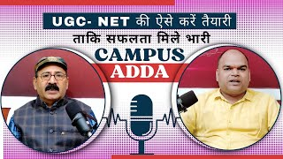
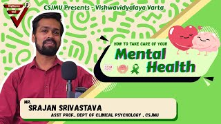
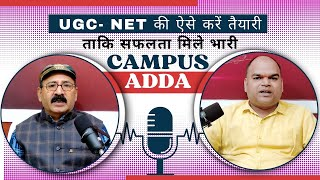
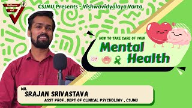
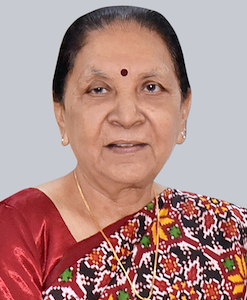
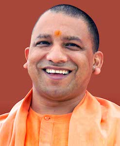
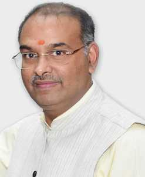

Gallery
Innovation Foundation & Research center
Sports council
Back Papers
Sustainablity
Digital Evaluation 2025-26
AISHE Survey 2024-25 Admission & result Data
Photo Galleries
results
Regarding 2025-26 AEDP Courses and BSC (Medical Microbiology) Odd Semester Exam. Schedule 04-12-2025
Regarding Examination Center of B.Sc. (Ag.) for District Hardoi, Lakhimpur, Raebareli, Sitapur
IMP!!! In view of UPSC Examination 2025, the Examination of NEP Odd Semester Exam. to be held on 06-12-2025 and 21-12-2025 will be held on 12-12-2025 & 24-12-2025
RDC Notice for meeting session 2024-25 candidates
Regarding Shri Guru Tegh Bahadur Ji Balidan Diwas public holiday
Regarding 2025-26 BSC (AG) I, III & V and MSC (AG) I & III Sem. Scheme [22-11-2025]
Latest Videos & Podcasts
 



Department Event

About CSJM University
Located in one of the biggest industrial metropolis of state
of Uttar Pradesh, Chhatrapati Shahu Ji Maharaj University
stands as a hallmark of higher education. It is an
educational community where students of various religions
and cultural backgrounds study and work together in a
congenial atmosphere. The university is geared to provide
maximum scholastic benefit to each individual student.
Chhatrapati Shahu Ji Maharaj University, Kanpur has been on
the map of higher education for more than five decades.
Established in 1966, it has not looked back...
|  |  |  |
| Smt. Anandiben Patel Hon'ble Chancellor & Governor Uttar Pradesh | Shri Yogi Adityanath Hon'ble Chief Minister Uttar Pradesh | Prof. Vinay Kumar Pathak Vice Chancellor CSJMU Kanpur |